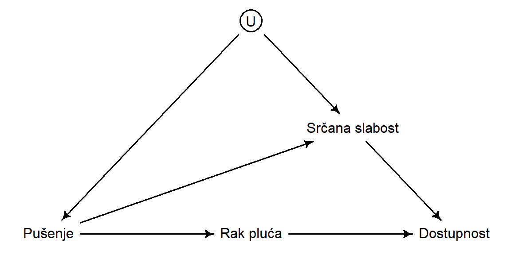

1 Uvod
Opservacione studije imaju dva osnovna tipa dizajna, koji su podeljeni na osnovu vremena merenja. U studijama preseka sva merenja su zabeležena u jednom trenutku (najčešće je to kratak vremenski period). U kohortnim studijama merenja se prikupljaju tokom dužeg vremenskog periodu u grupi ispitanika koja je definisana na početku studije (“kohorta”).
2 Studija preseka
Primer istraživačkog pitanja
Da li postoji odnos između telesne težine i hipertenzije?
Prednosti
- …
- …
Problemi
- Praćenje kohorte, loss to followup
- Ponovljenja merenja, preciznost
- Cena
Cross-sectional studies can be used for examining associations, although the choice of which variables to label as predictors and which as outcomes depends on the cause-and-effect hypoth- eses of the investigator rather than on the study design. This choice is easy for constitutional factors such as age, race, and sex; these cannot be altered by other variables and therefore are always predictors. For other variables, however, the choice can go either way.
DAG as a tool for variable selection.
cross-sectional studies provide information about prevalence, the proportion who have a disease or condition at one point in time.
When analyzing cross-sectional studies, the prevalence ofthe outcome can be compared in those with and without an exposure, yielding the relativeprevalence of the outcome, the cross-sectional equivalent of relative risk.
Sometimes cross-sectional studies describe the prevalence of ever having done something or ever having had a disease or condition. In that case, it is important to make sure that follow-up time is the same in those exposed and unexposed.
It’s often difficult to establish causal relationships from cross-sectional data. Cross-sectional studies are also impractical for the study of rare diseases, unless the sample is drawn from a population of diseased patients rather than the general population. A case series of this sort is better suited to describing the characteristics of the disease than to analyzing differences between these patients and healthy people, although informal comparisons with prior experience can sometimes identify very strong risk factors.
Because cross-sectional studies measure only prevalence, rather than incidence, it is impor- tant to be cautious when drawing inferences about the causes, prognosis, or natural history of a disease. A factor that is associated with prevalence of disease may be a cause of the disease but could also just be associated with duration of the disease. For example, the prevalence of chronic renal failure is affected not only by its incidence, but also by survival once it has oc- curred. Given the observation that obesity is associated with greater survival among dialysis pa- tients (4), a cross-sectional study of the predictors of chronic renal failure might overestimate the association between obesity and renal failure.
2.1 Serijske studije preseka (upitnici)

Occasionally, investigators perform a series of cross-sectional studies in the same population, say every 5 years. This design can be used to draw inferences about changing patterns over time. Serial cross-sectional surveys have a longitudinal time frame, but they are not the same as a cohort study, because a new sample is drawn each time. As a result, changes within individuals cannot be assessed, and findings may be influenced by people entering or leaving the population (and, thus, the samples) due to births, deaths, and migration.
3 Kohortna studija


Primer istraživačkog pitanja
Da li postoji odnos između telesne težine i hipertenzije?
Prednosti
- …
- …
Problemi
- Praćenje kohorte, loss to followup
- Ponovljenja merenja, preciznost
- Cena
Osnovne karakteristike kohortnih studija su definisanje grupe ispitanika na početku istraživanja i longitudinalno praćenje. Postoje prospektivne, retrospektivne i multiple kohortne studije. Česti problemi su retencija kohorte.
Unlike cohort studies, which have a longitudinal time dimension and can be used to estimate incidence.
3.1 Prospektivna kohorta
A major advantage of the cohort design is that, unlike cross-sectional designs, it allows the cal- culation of incidence—the number of new cases of a condition occuring over time.
Measuring levels of the predictor before the outcome occurs establishes the time sequence of the variables, which strengthens the process of inferring the causal basis of an association
expense and inefficiency for studying rare outcomes
Even diseases we think of as relatively common, such as breast cancer, happen at such a low rate in any given year that large numbers of people must be followed for long periods of time to observe enough outcomes to produce meaningful results.
| id | pol | tezina | visina | starost | doza_ibuprofen | vreme | skor_nrs_bol |
|---|---|---|---|---|---|---|---|
| 1 | M | 70 | 180 | 65 | 400 | 0.0 | 5 |
| 1 | M | 70 | 180 | 65 | 400 | 6.0 | 3 |
| 2 | F | 55 | 170 | 70 | 200 | 0.0 | 4 |
| 2 | F | 55 | 170 | 70 | 400 | 6.5 | 1 |
| 3 | M | 90 | 188 | 45 | 600 | 0.0 | 6 |
3.2 Retrospektivna kohorta
The design of a retrospective cohort study (Figure 7.3) differs from that of a prospective one in that the assembly of the cohort, baseline measurements, and follow-up have all happened in the past. This type of study is only possible if adequate data about the predictors are available on a cohort of subjects that has been assembled for other purposes, such as an electronic clinical or administrative database.
advantage of being much less costly and time-consuming. disadvantages are the limited control the investigator has over the approach to sampling and follow-up of the population, and over the nature and the quality of the baseline measurements. The existing data may be incomplete, inaccurate, or measured in ways that are not ideal for answering the research question.
3.3 Multipla kohortna studija
The multiple-cohort design may be the only feasible approach for studying rare exposures to potential occupational and environmental hazards. The problem of confounding is accentuated in a multiple-cohort study because the cohorts are assembled from separate populations that can differ in important ways (besides exposure to the predictor variable) that influence the outcomes.
| id | grupa | pol | tezina | visina | starost | doza_ibuprofen | vreme | skor_nrs_bol |
|---|---|---|---|---|---|---|---|---|
| 1 | izlozen | M | 70 | 180 | 65 | 400 | 0.0 | 5 |
| 1 | izlozen | M | 70 | 180 | 65 | 400 | 6.0 | 3 |
| 2 | kontrola | F | 55 | 170 | 70 | 200 | 0.0 | 4 |
| 2 | kontrola | F | 55 | 170 | 70 | 400 | 6.5 | 1 |
| 3 | izlozen | M | 90 | 188 | 45 | 600 | 0.0 | 6 |
3.4 Longitudinalna (serijska) studija
4 Studija slučaj-kontrola



Primer istraživačkog pitanja
Da li neonatalna profilaksa vitaminom K utiče na razvoj dečije leukemije?
Prednosti
- Dobra za retke ili događaje sa dugim latentnim periodom
- Velika količina informacija za mali broj ispitanika
- Laka za izvođenje
Problemi
- Incidenca i prevalencu je nemoguće izračunati
- Samo jedan ishod je moguće analizirati
- Pristrasnost (odvojeno uzorkovanje i retrospektivno merenje)
Case–control studies are retrospective. The study identifies one group of subjects with the disease and another without it, then looks backward to find differences in predictor variables that may explain why the cases got the disease and the controls did not.
in a case–control study the investigator works backward. She begins by choosing one sample of people with the outcome (the cases) and another sample of people without that outcome (the controls);
Pristrasnost uzorka
n case–control studies the cases must be sampled from patients in whom the disease has already been diagnosed and who are available for study. This sample may not be representative of all patients who develop the disease because those who are undiagnosed, misdiagnosed, unavailable for study, or dead are unlikely to be included
4.1 Nested slučaj i kontrole (varijanta)
A nested case–control design compares the incident cases nested in a cohort study with controls drawn at random from the rest of the cohort; this design controls sampling and measurement bias and saves money if the predictors are expensive measurements that can be made on stored specimens or images collected at the outset of the cohort study.
The investigator begins by identifying a cohort of subjects at risk for the outcome that is large enough to yield sufficient numbers of cases to answer the research question, and that provides the ability to measure the exposure variable, either because specimens have been banked or medical records (or subjects) with exposure information are available.
4.2 Gustina incidence slučaj i kontrola
An incidence-density case–control design allows investigators to analyze risk relationships, taking into account changes over time in risk factor levels and loss to follow-up.
4.3 Nested slučaj-kohorta
And a nested case–cohort design allows a random sample of the entire cohort to serve as the control for several different sets of cases.
5 Zaključak
Navođenje
BibTeX navođenje:
@online{n. grubor2024,
author = {N. Grubor, Nikola},
title = {Kauzalne strukture čestih medicinskih studija},
date = {2024-05-06},
url = {https://nikola-grubor.github.io/myblog/posts/sr/studije},
langid = {sr-Latn}
}
Za pripisivanje autoru, molimo navedite ovaj rad sa:
N. Grubor, N. (2024, May 6). Kauzalne strukture čestih medicinskih
studija. https://nikola-grubor.github.io/myblog/posts/sr/studije